中西不死生物比較：殭屍 vs 吸血鬼 vs 喪屍
作為一名前端開發者，作者運用自己的技術背景，將這些文化分析與比較呈現於網頁中。他並不滿足於單純的文字敘述，而是通過結合互動性強的網頁設計和創意排版，將這些吸血鬼與殭屍的知識以更直觀、趣味十足的方式呈現給讀者。他將這一前端作品部署到GitHub Pages，開設專案，將自己的文化研究和技術技能結合，讓更多人可以輕鬆地接觸到這些深入且富有思考的內容。
前言：不死神話的集體混淆與當代解構視角
在跨越百年的大眾流行文化中，「死而復生」永遠是最具吸金魅力、卻也遭受最嚴重符號混淆的題材。每當提及不死生物，多數人的腦海中往往會將不同文化系統的怪物雜燴一爐：既把中國清代官服的跳屍與歐美生化末日的食腦活屍混為一談，又將好萊塢電影中懼怕十字架的古堡貴族視為唯一的正統吸血鬼形象。
然而，當我們撥開當代影視與玄幻小說層層堆疊的商業濾鏡，便會發現**東方的「殭屍（Jiangshi）」、西洋的「吸血鬼（Vampire）」與現代科幻的「喪屍（Zombie）」**，在生物學底層邏輯、文化宿命象徵、甚至傳播法律維度上，有著截然不同且不可跨越的鴻溝：
- 東方殭屍根植於宗族秩序、鄉土歸葬與天地五行，其核心魅力在於凡人道士在生死邊緣以「機制相剋」進行的極限博弈；
- 西洋吸血鬼則經歷了從中世紀基督教原罪、19 世紀哥德浪漫階級壓迫，一路突變至當代偽科幻與存在主義的複雜演進；
- 現代喪屍徹底撕下了超自然神話的外衣，成為當代社會對生化失控、病毒變異與文明秩序崩解的極致投影。
本專案以嚴謹的文化考據、物理力學、神經生物學與博弈論為基石，旨在穿透商業二創製造的種種神話迷霧。本文作為全站的總綱入口，將帶領讀者逐一拆解這三種不死生物的本質差異，還原其背後最真實的文化演變軌跡。
一、殭屍是什麼？（Jiangshi）
（一） 譯名誤區與官方英譯考據（Chinese Vampire vs Zombie）
受到西洋流行文化的長年影響，許多人在日常交流中常下意識地將中文的「殭屍」直接翻譯為英文的 Zombie，但從文化脈絡與生物學特徵來看，這是一個極其嚴重的概念置換。
在跨文化傳播的正式學術與影視語境中，殭屍的標準英文應為 Jiangshi（中文音譯）或 Chinese Vampire（意譯；亦即「中國的吸血生物」）。這是因為傳統殭屍吸食生者血液、懼怕日光、受地脈陰煞催化的特質，在西方符號體系中最接近的是古典 Vampire，而非毫無心智、僅靠進食生肉大腦驅動的現代病毒喪屍。
正因如此，回顧 80 年代至今華語靈幻影視的外銷歷史，舉凡《殭屍先生》、《千年殭屍王》、《救殭清道夫》等經典港片的官方英譯名稱，清一色採用 Mr. Vampire、The Era of Vampires、Vampire Cleanup Department，而絕非 Mr. Zombie、The Era of Zombies 或 Zombie Cleanup Department，以下官方海報與實證紀錄即為鐵證：
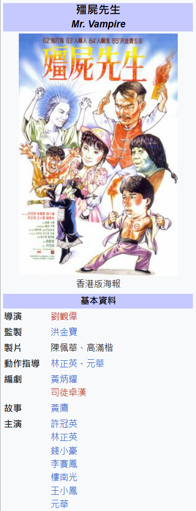
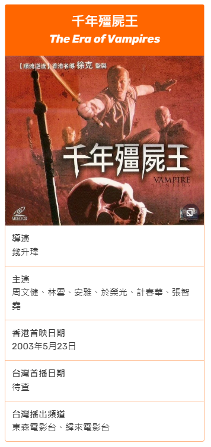
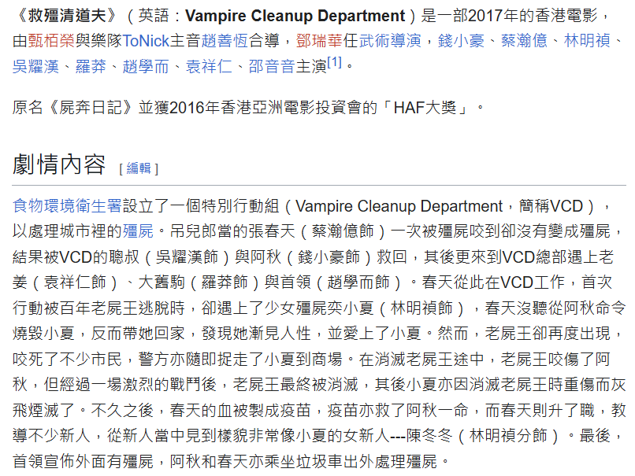
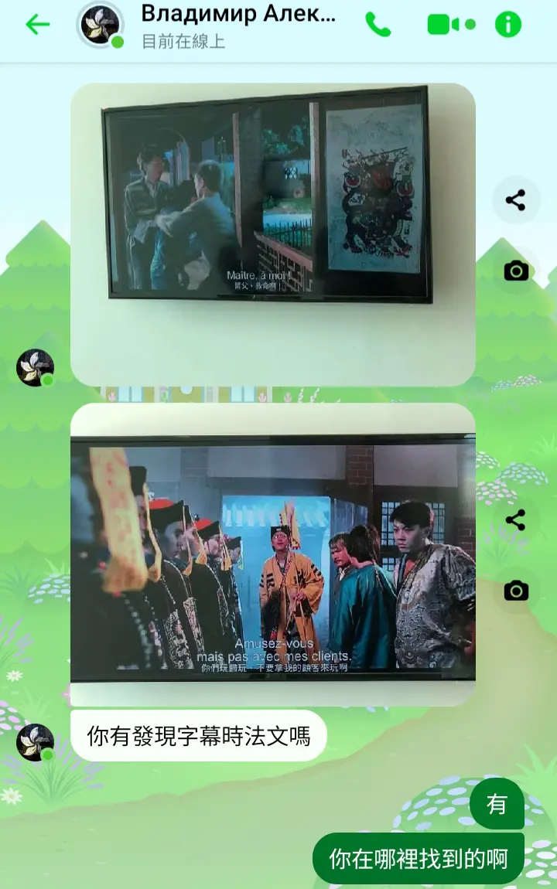
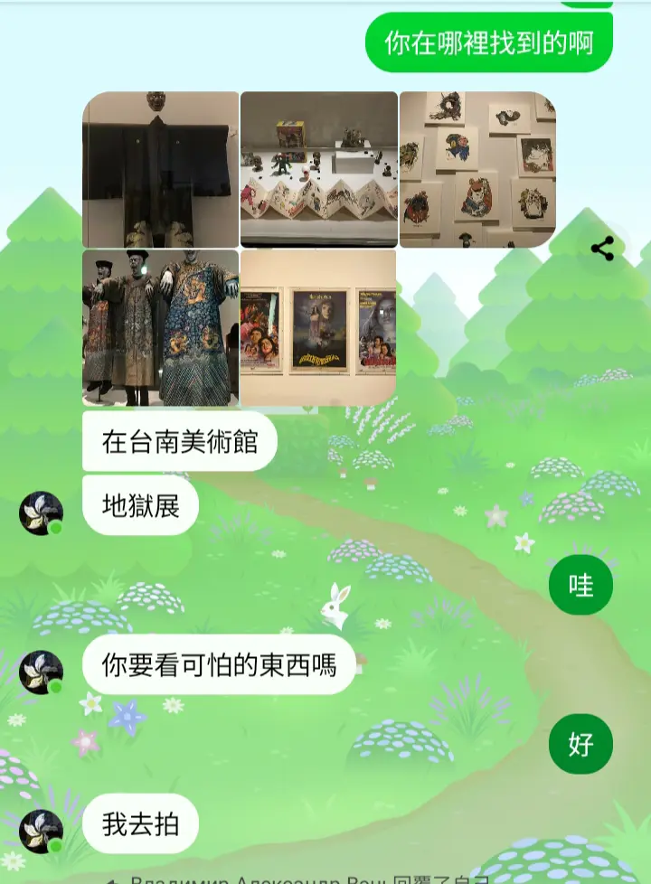
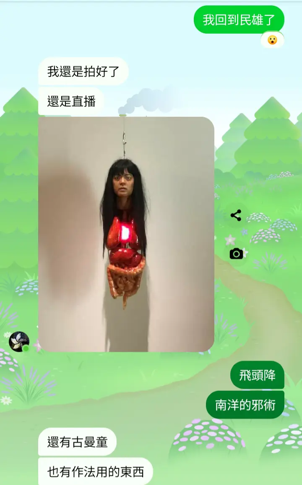
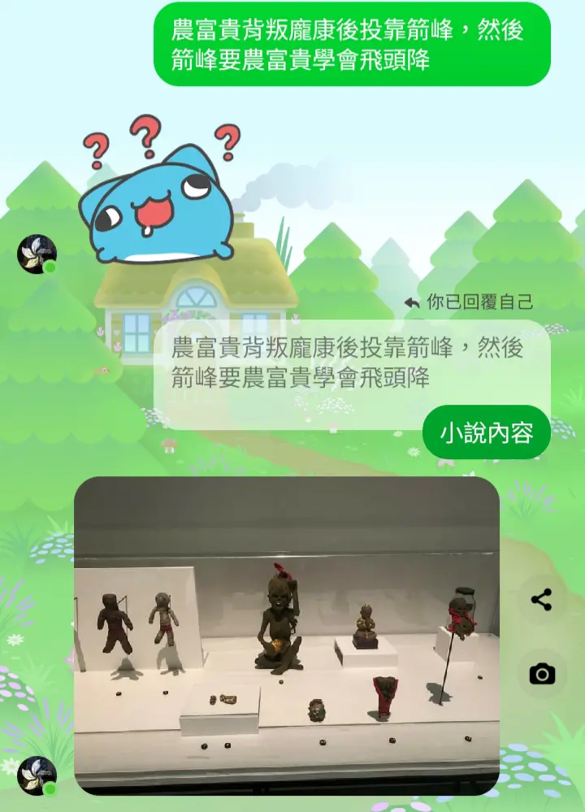
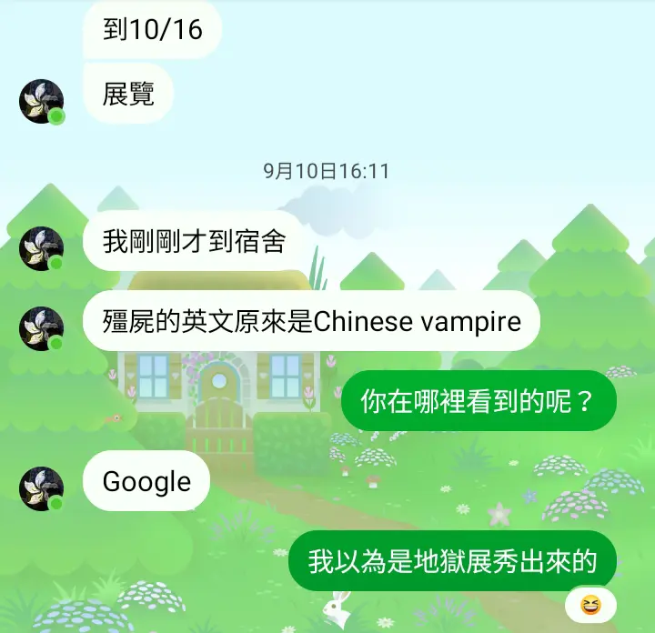
（二） 民俗起源、生理特徵與等級演變（跳殭至太古犼）
殭屍起源自中國傳統民間信仰與湘西趕屍傳說，是死後屍體因怨氣不散、地脈陰煞之氣滋養或道家巫術催化而形成的異常產物。傳統殭屍在最原始的民俗狀態下屬於「屍變」現象，復活後會憑藉嗅聞生人氣息或吸食生血來維持活動。
它們的經典行為特徵包括：
- 吸血與吸取陽氣：與吸血鬼相似，殭屍會吸取生者的血液或陽氣以維持其屍身不腐。
- 夜行性與關節僵直：肌肉屍僵未解，雙臂前平伸、靠彈跳前進，對陽光極度敏感，日光照射會灼傷其屍身陰氣。
- 五行機制相剋：可藉由糯米拔毒、墨斗線封鎖、黑狗血破煞、硃砂符咒貼額或桃木劍刺心等民俗道法加以制伏。
在明清志怪筆記（如袁枚《子不語》）與後世玄幻演變中，殭屍具備了完整的進化鏈階梯：從最低階的跳殭、能御風滑翔的飛殭，逐步修煉為能引發赤地千里的大旱之神魃，乃至吞龍食佛、口吐真火的終極太古神魔犼。
（三） 當代偽神話除錯：網文熱炒的「四大殭屍始祖」真相
在當代網路論壇與修仙玄幻小說中，常盛傳黃帝蚩尤時期有所謂「四大殭屍始祖」——旱魃、將臣、後卿、贏勾。許多讀者甚至誤以為這是先秦古籍記載的正統神話，但從文獻學與影視傳播史檢視，這完全是近二十年由當代影視與修仙網文東拼西湊組裝而成的「偽神話」：
- 將臣（純港劇原創）：先秦古籍與清代志怪中根本沒有名為「將臣」的屍王。此角色純粹出自 1998 年香港亞視經典奇幻劇《我和殭屍有個約會》，是編劇陳十三借用「盤古族人」設定創造出的影視產物，後被網文作者擅自吸納進神話體系。
- 後卿與贏勾（網文移花接木）：兩者原型出自《山海經》或志怪筆記中的零星神話人物（如黃帝手下將領），但古籍中從未記載他們「死後變成殭屍」。是 2000 年代初期的網路玄幻作者，為了湊齊「地水火風」或「四大陣營」，將其生搬硬套扣上了殭屍始祖的帽子。
- 旱魃（唯一有古籍依據者）：唯有「魃」在《詩經》與《山海經》中確實存在，原為黃帝之女「女魃」，助黃帝止雨擊敗風伯雨師，後演變為引發旱災之神；明清小說（如《子不語》）才將其正式列為殭屍的高階形態。
🎬 殭屍文化與等級演變參考影片：
二、吸血鬼的傳說、特色與文化演變路徑
早期港片常將吸血鬼通稱為「西洋殭屍」，在實質本體論上，他們同樣屬於「死後復活的屍骸」。然而，吸血鬼在西方傳說與當代影視的百年演變中，展現了比東方殭屍更加劇烈的多階段符號異化——從中世紀的宗教詛咒，到現代的科幻偽生物學，再到東亞影視的民俗混種：
（一） 古典哥德期：基督教二創與神聖秩序的反面鏡像
在早期巴爾幹民間傳聞與 19 世紀西方經典文學（如《德古拉》）中，吸血鬼與基督教世界觀深度綁定。無論是「被上帝逐出受詛的該隱」、抑或是「出賣耶穌後上吊復活的猶大」，吸血鬼本質上是對神聖教權的背叛象徵。因此，這時期的吸血鬼擁有極其明確的宗教克星：
- 教條弱點：極度畏懼十字架、聖水、聖經、大蒜、銀器與陽光，未經屋主邀請甚至無法進入私人宅邸。
- 階級與初擁：具備貴族般的優雅身段、語言天賦與心智控制能力；透過血脈「初擁（Embrace）」將詛咒延續，代數越高、實力越強。
（二） 現代流行期：世俗化（去宗教化）、科幻解構與唯物唯美主義
進入 20 世紀中後期至 21 世紀，吸血鬼題材發生了翻天覆地的「去宗教化」世俗轉型。大量經典作品開始徹底撕下基督教符號，改用存在主義、資本批判甚至偽科幻醫學來重新詮釋：
- 《夜訪吸血鬼》（安·萊斯宇宙）：吸血鬼走進存在主義危機。主角路易直接在天主教堂中嘲諷十字架對吸血鬼毫無物理或精神制約力；吸血鬼的本質轉化為永生所帶來的終極孤獨、記憶磨損與美學沉溺。
- 《暮光之城》（史蒂芬妮·梅爾宇宙）：基督教弱點被徹底廢除。吸血鬼不再畏懼大蒜與聖水，照射陽光不再化為灰燼而是如鑽石般折射光芒（Diamond Skin）；轉化機制被「偽科幻化」為體內水分被毒液置換、細胞結晶石化，甚至引發大腦失去神經可塑性的重度超憶症。
- 《吸血鬼獵人：林肯總統》：吸血鬼被賦予了強烈的社會學與政治隱喻，化身為美洲南方蓄奴莊園背後的「資本寄生階級」，弱點被嚴格限制在單純的「銀質材料物理破壞」，與宗教神罰毫無關聯。
（三） 東亞跨文化混種：當西洋伯爵撞進茅山道術宇宙
當西方吸血鬼符號傳入香港與東亞影視體系時，編劇與導演大膽打破了文化壁壘，開創出獨一無二的「中西法術大亂鬥」：
- 在《一眉道人》、《驅魔道長》、《殭屍道長》等經典作品中，西方吸血鬼（如告魯斯伯爵）披著傳統黑紅斗篷來到東方，卻發現東方的桃木劍、黃紙硃砂符與八卦鏡對其「水土不服」；
- 茅山道士必須在搏殺過程中，緊急摸索「洋殭屍怕大蒜、怕十字架」的西方規則，甚至將大蒜搗碎塗在桃木劍上進行跨文化物理攻擊。這種文化誤讀與符號縫合，成為東亞娛樂文化極具魅力的獨特風景。
（四） 給創作者的解構除錯：該隱始祖的版權迷思，與「畏懼十字架」的非絕對性
許多現代讀者與新進奇幻創作者常陷入一個巨大的認知盲區：以為「該隱是血族始祖」以及「吸血鬼必怕十字架與聖水」是某種傳承千年的歐洲正統神話或宗教真理。然而，從文化傳播史與智慧財產權法嚴格檢視，這完全是一場跨世紀的商業二創與符號寄生：
- 該隱始祖說絕非古老神話：《聖經》中的該隱只是個犯下第一宗謀殺罪的「古代近東農民」。將該隱設定為第一代吸血鬼、流亡諾德之地、傳承十三氏族與世代衰減法則，完全是白狼遊戲（White Wolf）在 1991 年推出桌遊《吸血鬼之避世潛藏》（VtM）時的原創世界觀。創作者若在商業作品中照搬該隱始祖與氏族體系，極可能面臨白狼法務的版權侵權警告。
- 德古拉才是全人類共享的 IP 提款機：愛爾蘭作家布蘭·史托克於 1897 年發表的小說《德古拉》，早已過了保護期，徹底進入公有領域（Public Domain）。好萊塢、漫威、港片與日本動漫能無限次讓德古拉登場，是因為「完全免費且無法律風險」。
- 形象的符號錯位：時間設定上該隱（新石器時代）確實比德古拉（15 世紀）古老，但該隱若按歷史還原，只是個滿臉鬍渣、披獸皮拿石鐮的原始農夫；而大眾真正迷戀的，永遠是德古拉所奠定的「穿著黑紅立領披風、住在懸崖古堡、端著紅酒杯的維多利亞哥德貴族」。這也是為何該隱在流行文化的人氣永遠打不過德古拉。
布蘭·史托克當年為了塑造戲劇衝突，把吸血鬼寫成對抗基督教聖物的惡魔，成功將「怕十字架與聖水」植入大眾的反射神經；但他並未交代初始源頭，白狼才得以順水推舟借用該隱補完漏洞。
這提醒了所有創作者：吸血鬼「畏懼十字架、大蒜與陽光」從來不是宇宙物理真理，而是可以隨故事主題自由拆卸的「文化補丁」！
- 如果你想寫純愛與偽科幻（如《暮光之城》），大可廢除所有宗教弱點，讓陽光變成鑽石折射，把不死解構成細胞結晶；
- 如果你想探討存在主義孤獨（如《夜訪吸血鬼》），吸血鬼完全可以坐在天主教堂裡嘲笑十字架的無能；
- 如果你想進行階級與政治批判（如《吸血鬼獵人：林肯總統》），吸血鬼就是南方蓄奴資本家，唯一的弱點只剩下純粹的銀質材料物理殺傷。
🎬 西洋吸血鬼能力、古典詛咒與現代變奏的參考多媒體：
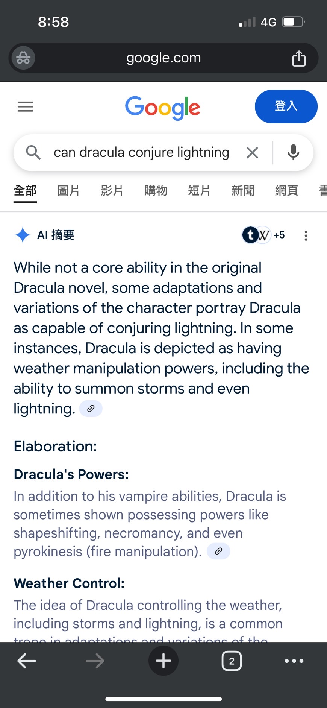
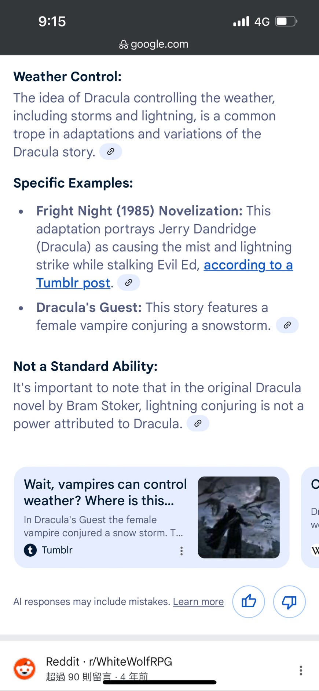
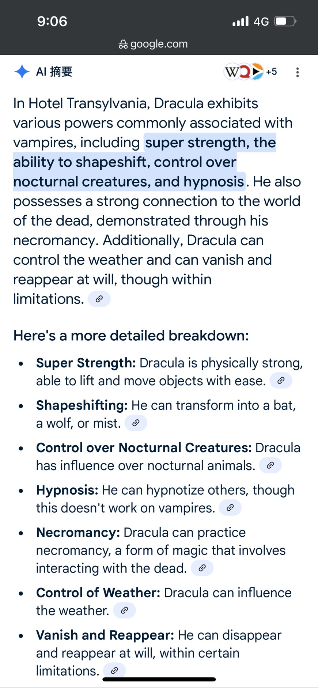
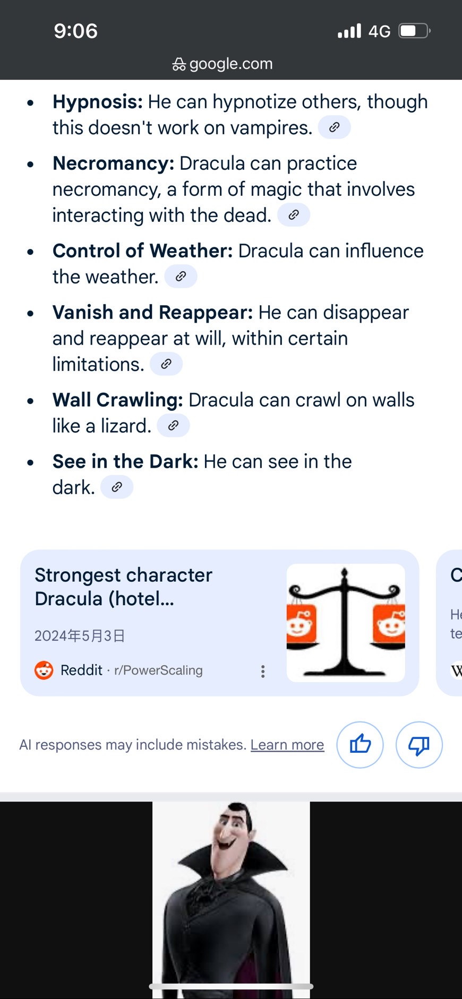
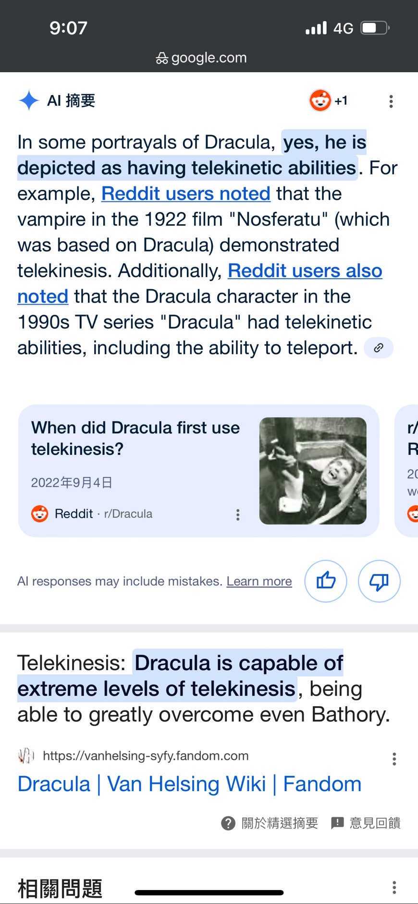
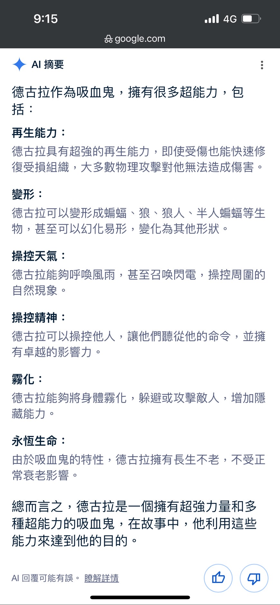
三、喪屍的真相（Zombie）
現代科幻災難片中的喪屍（Zombie）與傳統的殭屍、吸血鬼截然不同：
- 科學起源：喪屍多半是生前受到生化病毒、基因突變真菌（如《最後生還者》）、寄生蟲或輻射感染，導致大腦壞死後再度活動的肉體。
- 進食本能：以生肉和活人為食，不是吸血，且完全沒有人類理智與智慧。
- 擴散方式：主要靠撕咬、血液與體液交換進行大規模傳染。
- 唯一弱點：破壞其中樞神經（爆頭）即可將其完全消滅，不怕陽光、十字架或符咒。
現代經典喪屍作品（如《活人生吃》、《屍速列車》、《陰屍路》）往往不只流於恐怖，更多的是帶有社會隱喻，深刻探討文明秩序崩潰下的人性極限。
四、總結：三者差異對照表
| 特徵項目 | 東方殭屍 (Jiangshi) | 西洋吸血鬼 (Vampire) | 現代喪屍 (Zombie) |
|---|---|---|---|
| 文化起源 | 中國民間信仰、湘西趕屍傳說、明清志怪筆記 | 歐洲民間傳說、基督教二次創作 ➔ 現代流行世俗化與科幻偽生物學 | 海地巫毒教還魂屍 ➔ 現代科幻病毒、寄生蟲與真菌感染 |
| 肢體運動與生理 | 肌肉屍僵未解，雙臂前平伸，依賴雙足彈跳前進；高階可御風滑翔 | 外貌維持常人或具病態美，具超常速度、力量、浮空或化霧能力 | 中樞神經受損，肉體持續腐敗；多數步履蹣跚，部分變異種狂暴奔跑 |
| 主食來源 | 吸食生者血液、嗅聞汲取生命陽氣 | 吸食人類鮮血（現代創作亦有吸食動物血之素食派） | 瘋狂撕咬並吞食活人生肉與大腦（非單純吸血） |
| 核心弱點與機制 | 陽光、糯米、桃木劍、硃砂符咒、黑狗血、屏息閉氣 | 古典期：十字架、聖水、大蒜、銀器、陽光；現代期：多已免疫宗教器物，僅餘純物理破壞、銀器或火焚 | 摧毀大腦中樞神經（爆頭、焚毀大腦） |
| 智慧與心智 | 初階毫無神智，僅依呼吸本能索敵；修煉至魃、犼具備高等神智 | 具備極高智慧、優雅謀略、語言天賦與心靈控制等魔力 | 毫無自主靈智與記憶，完全受低等食慾與神經反射驅使 |
| 常見始祖迷思 | 網文常傳「四大殭屍始祖」（實為當代修仙小說與 1998 港劇陳十三原創之縫合） | 大眾常誤認「該隱為正統始祖」（實為 1991 年白狼桌遊《避世潛藏》之商業二創專利） | 各作品獨立設定（多為某跨國醫藥財閥之實驗室外洩零號病患） |
| 經典代表作 | 《殭屍先生》、《殭屍叔叔》、《殭屍道長》系列 | 《德古拉》、《夜訪吸血鬼》、《暮光之城》系列 | 《惡靈古堡》、《陰屍路》、《屍速列車》、《最後生還者》 |
縱觀這三種不死生物的演變軌跡，我們會發現它們從來不是一成不變的古老教條，而是隨著時代不斷抽換內核的「文化與商業模組」：東方跳殭寄託了民間對宗族秩序與鄉土歸葬的焦慮；西洋吸血鬼折射了從神權壓迫走向資本寄生與存在主義孤獨的歷程；而現代喪屍則精準擊中了當代人對文明崩潰與生化失控的集體恐慌。
看清這些設定背後的因果邏輯、法律產權與二創脈絡，正是我們解構整個超自然流行宇宙的第一步。若您想進一步從古典力學、神經生物學、地緣經濟學與博弈論等跨學科角度，深入檢視《暮光之城》的生理漏洞、九叔電影的武打美學、或是《惡魔城》的資本隱喻，歡迎點擊頁首的「📚 其他文章列表」，探索本站收錄的完整專題矩陣！
🧭 延伸閱讀：首頁核心主題深度解碼
延續本篇「殭屍、吸血鬼與喪屍」的三方對照，以下專題針對本頁提及的等級體系、始祖迷思、跨文化語境與末日演變進行了更深入的劇作與文獻除錯：
⬆️ 回到頂部展開其他完整的23篇文章列表「殭屍」與「吸血鬼」：語境差異、文化誤會與港產影視的符號混種探討
喪屍題材的演變：從巫毒魔幻、病毒科幻到真菌末日的深度文化解構
殭屍終極形態「犼」能吞龍滅佛，但為何電影只出現低階跳殭？（附戰力雷達互動）
網路狂歡下的偽神話：從先秦古籍、《子不語》到香港影視，戳破「四大殭屍始祖」
吸血鬼避世潛藏世界觀迷思：該隱為何不能登場？兼論德古拉商業吸金密碼
吸血鬼起源與演變分析：從民間惡靈、聖經二創到東亞文本重塑
等級森嚴與敘事張力：從血統/年資碾壓談「等級崩壞」對商業作品的致命傷
📢 喜歡這篇文章嗎？分享給朋友吧！
分享到 Facebook | 分享到 Line | 分享到 X (Twitter)